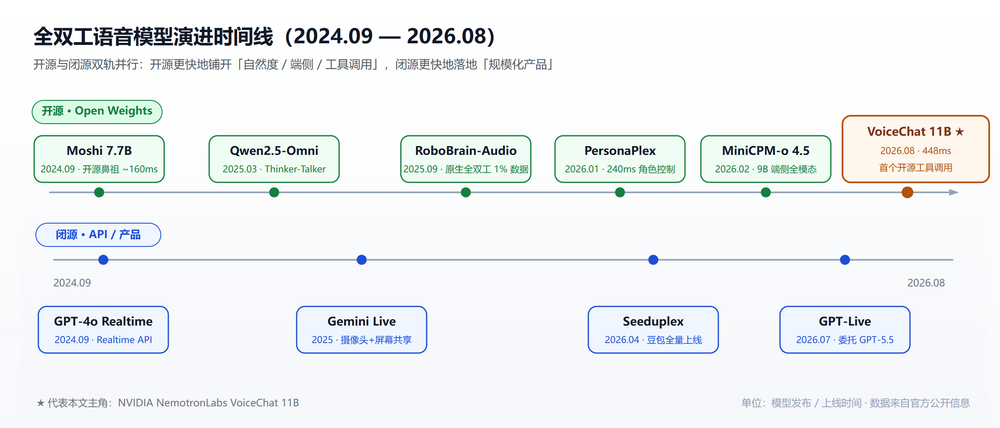
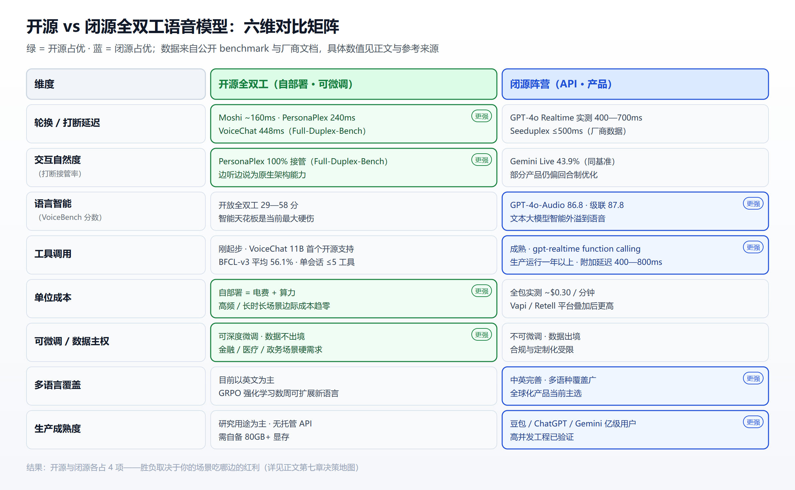

像打电话一样聊AI：全双工语音模型开源/闭源终极横评，谁更值得押注？
一个数字值得停下：448 毫秒。
这是 NVIDIA 在 2026 年 8 月开源的 NemotronLabs VoiceChat 11B 在 Full-Duplex-Bench 1.0 上的轮换（turn-taking）延迟——从你话音落下，到模型开口接话，中间不到半秒，已经低于人类对话中"对方大约什么时候该开口"的感知阈值。它还能在说话的同时持续监听你：你刚开口打断，它 480ms 内就平滑收声，接管率 1.00。而且它是第一个开放权重、支持实时工具调用的全双工语音模型——一边和你聊，一边在后台调 API。
对很多人的第一反应是："AI 终于像打电话一样聊天了。"
过去两年，语音 AI 的技术叙事从"说话更像真人"（TTS 音质）转移到了"对话更像真人"（全双工交互）。这场范式转变正在把市场劈成两个阵营：以 Kyutai、NVIDIA、面壁、智源为代表的开源派，和以 OpenAI GPT-Live、谷歌 Gemini Live、字节 Seeduplex 为代表的闭源派。两边都在做同一件事——把语音交互从"对讲机"改造成"电话"——但押注逻辑、能力边界和商业模型截然不同。
本文做一件事：把两个阵营摆在桌上横评。先从 VoiceChat 11B 拆起，再给开源生态画一张全景图，接着看闭源巨头们押了什么，最后用数据回答那个最现实的问题——到底谁更值得押注。
一、为什么"全双工"是一个分水岭
在通信工程里，对讲机是半双工：同一时刻只能一个人说话，说完松开按钮，对方才能开口。电话是全双工：两个人可以同时说、同时听，可以打断、可以插话、可以有"嗯嗯"式的附和。
绝大多数语音助手到今天仍是对讲机。它们的架构是三级级联——ASR 把语音转文字，LLM 生成回复文本，TTS 把文本合成语音。判断"用户说完了吗"的是一个独立的 VAD（语音活动检测）模块，它只看音量，不懂语义：你停两秒想词，它判定你说完了；旁边有人咳嗽，它判定你开口了。而且模型在说话时根本"听不见"你，想打断得等它把整句说完。这种体验被网友调侃为"和 Siri 吵架像审讯犯人"。
全双工模型把这条路彻底推翻。它用一个端到端网络同时建模"用户的声音流"和"AI 的声音流"，每时每刻都在边听边说，不需要独立的 VAD 来判断轮次，打断、重叠、自然停顿、背景附和全部成为模型原生能力。
当前争夺这一高地的有三条技术路线：
- 原生音频全双工（Moshi、PersonaPlex、Seeduplex、VoiceChat 11B）：同一模型在并行流上同时处理听与说，延迟最低、最接近真人对话，但工程难度和稳定性挑战最大
- Thinker-Talker 分离（Qwen2.5-Omni）：推理在一个文本域"大脑"里完成，再把结果实时喂给语音生成器，能复用 LLM 生态的长上下文与工具调用，但本质是近全双工
- 流式级联（ASR→LLM→TTS）：把传统管线用流式+微轮次（micro-turn）优化到亚秒级，DuplexCascade 等方案甚至在去 VAD 后实现了名义上的全双工，工具调用最成熟，但打断体验仍受架构限制——这正是自托管的 speech-to-speech 四段级联管线要面对的核心问题：它靠 Smart Turn 投机回滚补丁来伪装轮次交接，每多一层级联，就多一层要打的补丁
这三条路线不是替代关系，而是并行演进。真正的分水岭不是延迟数字，而是架构是否把"听"和"说"放进了同一个模型——这决定了你能不能在 AI 说话时打断它。

图片来源：基于各官方发布信息整理，见文末参考来源
二、NVIDIA VoiceChat 11B 解剖：448ms 是怎么来的
先看它不是什么。它不是一个"更快的 ASR+LLM+TTS 流水线"，而是一个把整条语音链路塞进一个模型里的端到端系统：
- 输入侧：Fast Conformer 编码器直接把 16kHz 音频流编码成音频 token
- 大脑：Nemotron Nano v2 9B 大模型做主干，混合 Mamba/Transformer 架构，预测文本 token 的同时维持流式交互
- 输出侧：NVIDIA TTS 解码器把 token 还原成 22.05kHz 的语音，边生成边播放
- 工具通道：一条独立的输出通道预测
<TOOLCALL>块，应用代码执行后通过<TOOL_RESPONSE>把结果回填，AI 的语音不用中断
训练用掉了约 55 万小时真实+合成音频，构建在 SALM-Duplex 和 Audio Flamingo 3 两条技术线之上。它在 Full-Duplex-Bench 1.0 上交出的关键数据是：平滑轮换 TOR 0.82、延迟 448ms；用户打断接管率 1.00、延迟 480ms；VoiceBench 上位列开放全双工模型第二。
真正让它区别于所有前代开源模型的是边聊边调工具。传统语音 Agent 调工具要么打断对话，要么等工具跑完才说话，全程尴尬沉默。VoiceChat 为每个工具定义一句"on-hold"话术——工具一触发，AI 先开口安抚你："好的，我帮你查一下"，然后工具返回，它接着把结果说给你听。这直接把全双工从"聊天玩具"推进到了"能办事的 Agent"范畴。
但如果你准备立刻上生产，先泼一盆冷水。NVIDIA 自己标注这仅供研究用途，实测短板包括：
- 约 2 分钟的音频上下文上限，超长对话会退化成不可恢复的乱码
- 几轮之后可能出现自说自话、转写丢字
- 单会话建议不超过 5 个工具，不能并行调用多个工具
- 工具执行期间用户无法打断
- 工具调用可靠性：BFCL-v3 平均 56.1%（工具选择 82.5%，参数准确率 44.2%，pass@1 仅 33%）
- 部署门槛：x86_64 Linux + 单卡 80GB 显存起步（A100/H100/RTX 6000 Pro/B200），目前没有任何托管 API 或推理商在服务它
换句话说，NVIDIA 扔进开源社区的是一个能力天花板很高、但离生产还差一步的"种子"。它把"全双工 + 工具调用"这个此前只有闭源才能触达的组合，第一次变成了任何人都能下载的权重。
三、开源生态全景：从 2024 年的 Moshi 到 2026 年的群雄
VoiceChat 11B 不是孤例，它是开源全双工生态两年积累的集大成者。这条线可以追溯到 2024 年 9 月。
Kyutai Moshi（2024.9）是这个赛道的开山鼻祖。巴黎的 12 人非营利实验室用 Helium 7B 主干 + Mimi 神经音频编解码器 + 多流 RQ-Transformer，做出了第一个公开可下载的全双工语音模型，理论延迟 160ms。它首次证明"边听边说"不是闭源巨头的专属魔法，还顺手贡献了"内心独白"机制——生成音频的同时预测对齐文本作为内部推理层。Moshi 的全双工能力据论文归功于约 2000 小时的 Fisher 双向电话语音微调——一个 20 年前的付费数据集，这条数据瓶颈至今仍卡着整个开源赛道。
Maitrix Voila（2025.4）把延迟压到 195ms，低于人类平均反应时间（200-250ms），支持百万级音色和 10 秒级声音定制，全栈 MIT 开源。
阿里 Qwen2.5-Omni（2025.3）走了另一条路：Thinker-Talker 分离，推理在文本域完成、输出实时转语音，平均延迟 257ms。它的价值在于证明了"全双工的自然度"和"LLM 的智能"可以分家。
智源 RoboBrain-Audio（2025.9）是原生全双工阵营的重要一票。它提出"自然独白"（句级对齐替代词级对齐）摆脱了高成本的词级时间戳标注，只用业界 1% 的数据（100 万小时）训练，打断响应能压到 80ms 级，为具身智能场景提供了"边听边说"的底座。
NVIDIA PersonaPlex-7B-v1（2026.1）把角色控制带进了全双工：用文本定义人设、用音频定义音色，在 FullDuplexBench 上用户打断接管率达 90.8%（对比 Gemini Live 的 43.9%），中断响应 240ms。这是 VoiceChat 11B 的直系前身。
面壁 MiniCPM-o 4.5（2026.2）把"全双工"和"全模态"合并成同一件事，9B 参数在端侧 12GB 内存就能跑，提出 Omni-Flow 框架把多模态输入输出对齐到同一条时间轴上，让模型"边看、边听、边说"。
一句话总结这条线：开源用两年时间，把全双工从"能跑通"推进到"能调工具、能跑端侧、能定人设、能省数据"。VoiceChat 11B 的 448ms 和工具调用，是这条演进曲线的最新一站，不是终点。
四、闭源阵营：三家巨头各自的赌注
闭源这边，玩家更少、资源更猛，押注也更成体系。
OpenAI GPT-Live（2026.7.8）是这场叙事的主角之一。它取代了回合制的 Advanced Voice Mode，成为 ChatGPT 的第三代语音引擎，也是 OpenAI 第一个真正的全双工语音模型——"把轮次探测器从音频路径上拿掉"。关键设计是复杂问题后台委托：GPT-Live 边听边说，遇到硬问题，在后台调 GPT-5.5 去推理，你继续聊，结果回来它再自然地告诉你。ChatGPT 每周有 1.5 亿人在用语音功能。但对开发者不友好：发布时没有公开 API，开发者栈仍是 Realtime API（gpt-realtime-2.1，音频输入 $32/百万 token、输出 $64/百万 token，实测全包约 $0.30/分钟）。
谷歌 Gemini Live 押注的是"看得见"的全双工：一边语音对话一边看你的摄像头和屏幕，2026 年 3 月又发了面向开发者的 Gemini 3.1 Flash Live 低延迟音频模型。谷歌的牌是 Android 生态 + Home 硬件 + 超长上下文，走的是"语音助手升级成多模态智能体"的路线。
字节 Seeduplex（2026.4.9）是目前唯一把原生全双工做到亿级用户规模的闭源产品，在豆包 App 全量上线。官方数据：相比半双工，判停延迟降 250ms，抢话比例降 40%，误回复/误打断率在复杂声学场景减半，判停 MOS 提升 8%。它不是开源模型，走的是"产品级 API + 平台集成"的路子。
这三家的共同点是：闭源不是没有全双工，而是把全双工做成了产品体验或付费 API，靠规模、靠调度、靠后端的智能模型来兜底。GPT-Live 可以因为背后站着 GPT-5.5 而在推理深度上碾压一切开源语音模型；Seeduplex 可以因为站在豆包的流量和工程体系上而第一个落地；谷歌可以因为多模态融合而把语音做成 Agent 的一个入口。
五、横评矩阵：六个维度的正面对撞
把两边放在同一张表上，差距和反转同样明显。

图片来源：根据公开 benchmark、官方文档与第三方评测整理
延迟与自然度：开源并不输。Moshi 160ms、Voila 195ms、PersonaPlex 240ms、VoiceChat 448ms，都在人类反应阈值内；Full-Duplex-Bench 的打断接管率上，开源模型反而领先（PersonaPlex 100% vs Gemini Live 43.9%）。因为开源模型是"专为语音交互训练"，闭源大厂的产品还背着多模态和通用智能的包袱。
智能天花板：这是开源最难看的地方。VoiceBench 上闭源 GPT-4o-Audio 拿到 86.8，Whisper+GPT-4o 级联高达 87.8；而开源最强全双工只有 58 上下，Moshi 甚至只有 29.5。注意 VoiceBench 是回合制评测，本质测的是"语音输入下的语言智能"——开源全双工模型牺牲了通用智能去换交互自然度，这是目前的硬伤。
工具调用：闭源成熟，开源刚起步。gpt-realtime 的函数调用在生产里已经跑了一年多，工具延迟附加 400-800ms 已可接受；VoiceChat 11B 是第一个开源支持者，但 BFCL-v3 平均 56.1%、pass@1 33%，意味着每三次调用就可能出错一次。
成本：开源的优势在边际成本。闭源按分钟计费，全包实测 $0.30/分钟左右（Vapi/Retell 平台叠加后更高）；开源自部署只花电费和算力，还能通过量化、投机采样压缩成本。这对高频、长时长场景是决定性的。
可微调性与数据主权：开源完胜。PersonaPlex 证明了 5000 小时领域微调就能把模型专精到客服/助教场景；Kyutai 用 GRPO 强化学习几周内就能把全双工扩展到一个新语言。数据不出境、音色可定制、行为可调试，这对金融、医疗、政务场景是硬需求。闭源 API 在数据出境、合规和不可微调这三项上天然受限。
生产成熟度：闭源完胜。豆包、ChatGPT、Gemini 都是亿级用户规模验证过的高并发工程；开源这边最好的也只是研究用途——VoiceChat 自己标注 "research only"，Moshi 的上下文只有 4096 token，RoboBrain-Audio 面向具身场景还谈不上通用生产。
六、数据背后的真相：为什么"开源打不过闭源"的结论是错的
把横评数据摊开，很多人会得出"开源全双工还差得远"的结论。但这个结论忽略了两个关键变量。
第一，闭源的优势不在模型，而在后端。 VoiceBench 上 GPT-4o-Audio 的 86.8，很大程度来自 GPT-4o 文本大模型的智能，而不是语音交互本身强。一旦把基准换成专测全双工行为的 Full-Duplex-Bench——暂停处理、附和、打断接管——闭源产品的光环立刻褪色。NVIDIA 自己也用 Full-Duplex-Bench 1.0 的数据做卖点，而 PersonaPlex 在打断接管上早已反超 Gemini Live。换个尺子，排名就反转。
第二，开源的优势在迭代速度，不在当前水位。 从 Moshi 的 2024.9 到 VoiceChat 的 2026.8，不到两年，开源完成了"鼻祖—低延迟—端侧—全模态—工具调用"五级跳。Kyutai 用 GRPO 把新语言扩展从"年"压缩到"周"，意味着数据不再是开源阵营的绝对瓶颈。当前差距更多是时间差，不是路线差。
把时间轴拉长看，最值得关注的是混合架构的收敛。现在没有任何一个模型能同时赢下"自然度、智能、工具调用、多语言、生产稳定"全部维度。开源的现实解是：全双工前端负责"像人"，文本 LLM 后端负责"靠谱"——MoshiRAG 已经证明全双工模型可以异步挂接检索增强，这也是 VoiceChat 11B 工具通道的设计哲学。闭源则更倾向于把一切塞进一个超大模型里用算力兜底。
七、谁更值得押注：一张决策地图
与其问"哪个阵营赢了"，不如问"你的场景吃哪边的红利"。
- 做客服/外呼/车载等高频、长时长、预算敏感的语音 Agent：开源自部署更划算，边际成本趋近于零，且可以微调到你的话术体系。VoiceChat 11B 的"on-hold 话术 + 工具调用"思路值得直接借鉴
- 做隐私敏感行业（金融/医疗/政务）：只有开源这一条路。数据不出境、音色可定制、行为可审计是硬约束，闭源 API 无法满足
- 做全球化多语言产品：目前仍是闭源的主场（中英完善、多语种覆盖广），开源需等 Kyutai 们的 GRPO 路线继续铺开
- 快速验证一个语音 MVP：先走闭源 Realtime API，几小时上线；跑通后再评估是否值得迁到开源自部署
- 做陪伴/角色/数字人等"自然度第一"的场景：开源全双工反而是性价比之选，PersonaPlex、Voila 这类可定制人设的模型天然匹配
押注建议：不要把两个阵营当成二选一，而要把它们当成同一套架构的两层。全双工语音模型负责"听起来像人"，外部编排层负责"记忆、知识、工具、状态"。开源给了你第一层的自由与可控，闭源给了你快速起量的省心——先问清楚自己缺的是哪个。
小结
NVIDIA VoiceChat 11B 的 448ms 不只是一串数字，它标志着开源全双工语音第一次把手伸进了"能调工具的 Agent"领域。开源阵营从 Moshi 起步，两年内把全双工从概念推进到端侧、全模态、工具调用；闭源阵营则用 GPT-Live、Gemini Live 和豆包 Seeduplex 把全双工做成了亿级用户的产品体验。
如果只记住三件事：
- 开源赢在自然度、成本与可控性：延迟不比闭源差，打断接管率反超，自部署边际成本趋近于零，还能微调、能保数据主权
- 闭源赢在智能、工具成熟度与生产稳定：VoiceBench 86 vs 58 的智能差距真实存在，工具调用跑了一年多，亿级用户验证过工程
- 真正的战场是混合架构：全双工前端 + 文本大模型后端的组合正在成为共识，谁先打通"边聊边办成事"的最后一公里，谁就拿到下一代语音 Agent 的船票
语音 AI 的下一个里程碑，不是音色更像人，而是对话能办成事。在这个方向上，开源和闭源才刚刚开始真正竞争。
免责声明
本文所有性能数据、基准分数与成本数字均来自公开资料、官方文档与第三方评测，测量条件、硬件配置、软件版本、评测口径差异都会显著影响结果，不构成任何选型或投资承诺。文中引用的厂商自报数据（如 Seeduplex、GPT-Live、VoiceChat 的 benchmark）尚未完全经独立第三方复现，请以官方最新发布为准。模型许可（如 OpenMDW-1.1 研究许可）与商业使用条款请逐条核对官方原文。价格信息变动频繁，请以厂商官网实时报价为准。
参考来源
- NVIDIA-NemotronLabs-VoiceChat-11B 模型卡 — Hugging Face
- NVIDIA Releases NemotronLabs VoiceChat 11B — MarkTechPost
- NVIDIA Opens NemotronLabs VoiceChat 11B With Tool Calling — AI Weekly
- NVIDIA Opens VoiceChat 11B for Full-Duplex Speech — KiaDev
- NemotronLabs VoiceChat — NVIDIA NGC 容器页
- VoiceBench Leaderboard — matthewcym.github.io
- Full-Duplex-Bench: A Benchmark to Evaluate Full-duplex Spoken Dialogue Models — arXiv 2503.04721
- Full-Duplex-Bench 官方仓库（v1-v3）— GitHub
- Fullduplex.ai — 语音 AI 观测站（延迟榜单与生态）
- Moshi: a speech-text foundation model for real-time dialogue — arXiv 2410.00037
- Kyutai Moshi — GitHub
- Kyutai: the twelve-person Paris nonprofit — Fullduplex 垂直报告
- PersonaPlex-7B-v1 — Hugging Face
- NVIDIA PersonaPlex-7B: Open Source Full-Duplex Voice AI — GenMediaLab
- Voila — GitHub
- MiniCPM-o 4.5: Towards Real-Time Full-Duplex Omni-Modal Interaction — arXiv 2604.27393
- 具身智能从此「边听边说」，智源开源原生全双工语音大模型 RoboBrain-Audio — 掘金
- Qwen2.5-Omni 官方博客 — QwenLM
- GLM-4-Voice — GitHub
- DuplexCascade: Full-Duplex Speech-to-Speech Dialogue — arXiv 2603.09180
- Speech-to-Speech Models in 2026: Three Architectural Bets — Krzysztof Sopyła
- Introducing GPT-Live — OpenAI
- How we built a realtime system for responsive voice AI — OpenAI
- GPT-Live vs Gemini Live: Full-Duplex vs Multimodal Voice AI — Apidog
- GPT-Live: OpenAI's Voice Models and What They Change — Digital Applied
- Seed 全双工语音大模型发布：懂倾听、抗干扰 — 字节跳动 Seed 官方博客
- 字节 Seed 最新模型，让豆包学会闭嘴听人说话 — 硅星人（新浪）
- OpenAI Realtime API 生产实践与定价（2026）— Forasoft
- OpenAI API Pricing — 官方
- ElevenLabs API Pricing — 官方
- Awesome Full-Duplex Speech-to-Speech — GitHub 生态索引
相关阅读
- 自建语音 Agent 实战指南：HuggingFace speech-to-speech 从部署到中文适配
- 别再为 TTS 多花钱——2026 商用 + 开源语音合成选型指南
- LiveKit 实时语音视频 AI 平台入门
- 智能客服 Agent 全景图
- 商业与开源中文 ASR 方言实测对比
- 从 LLM 到 Agent：范式转变的深层逻辑
- 开源大模型选型指南
- Agent 治理与可观测性的隐性成本
- 反供应商锁定的 AI 工作流设计
推荐搭配装备
善其事，利其器。以下硬件能最大化你的AI体验👇
🔗 通过以上链接购买可支持本站持续运营 🙏